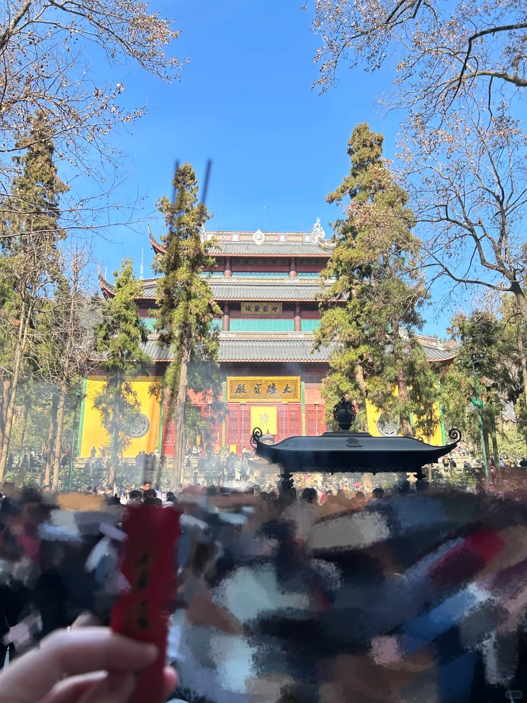
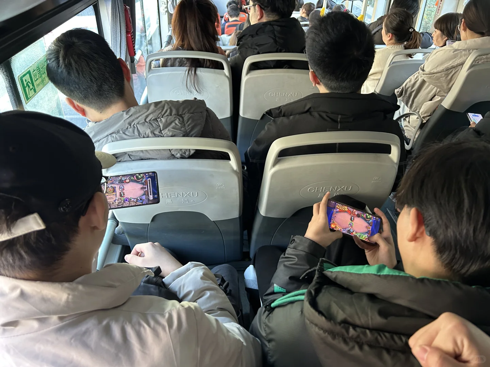
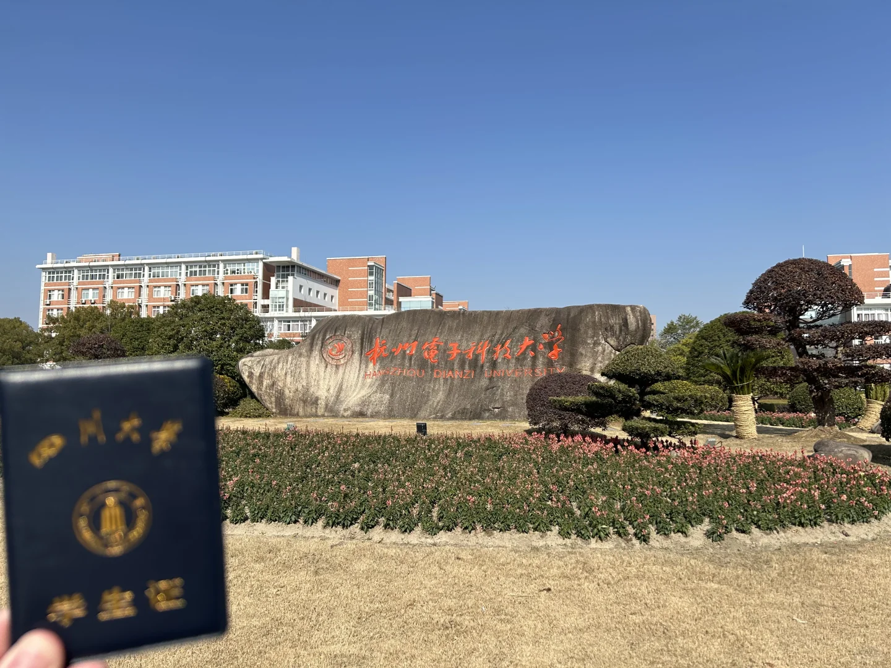
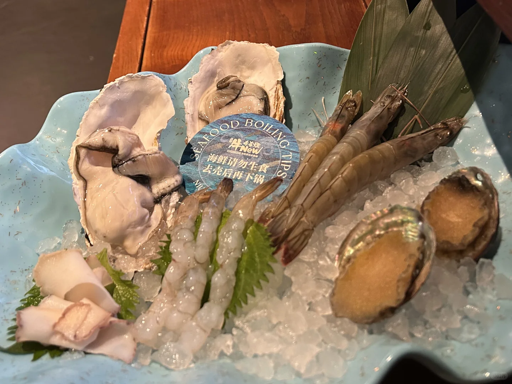
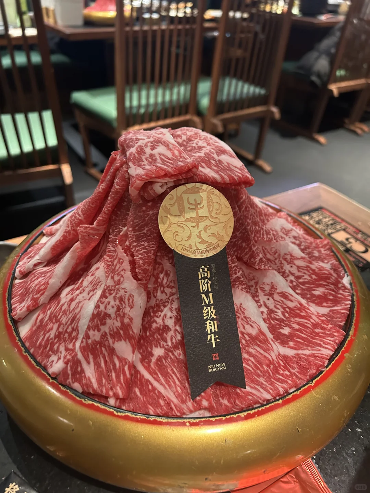
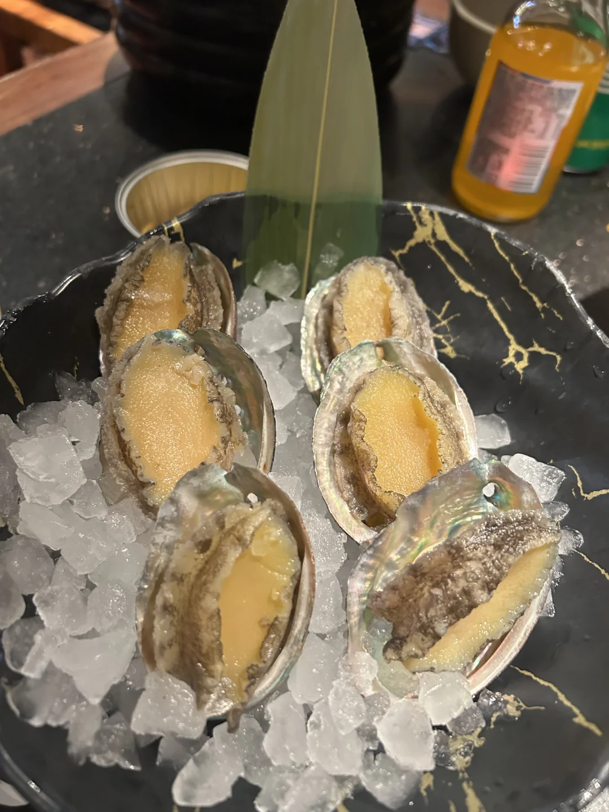
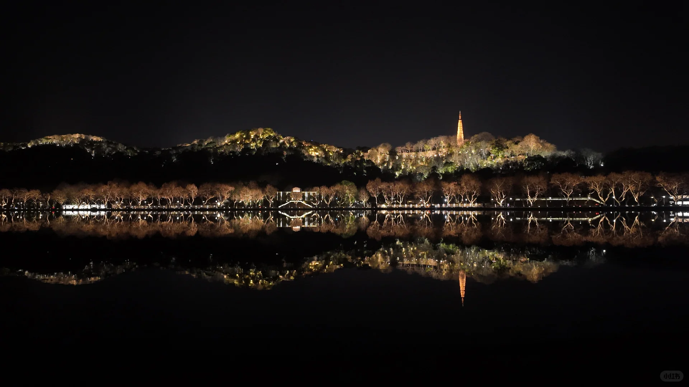
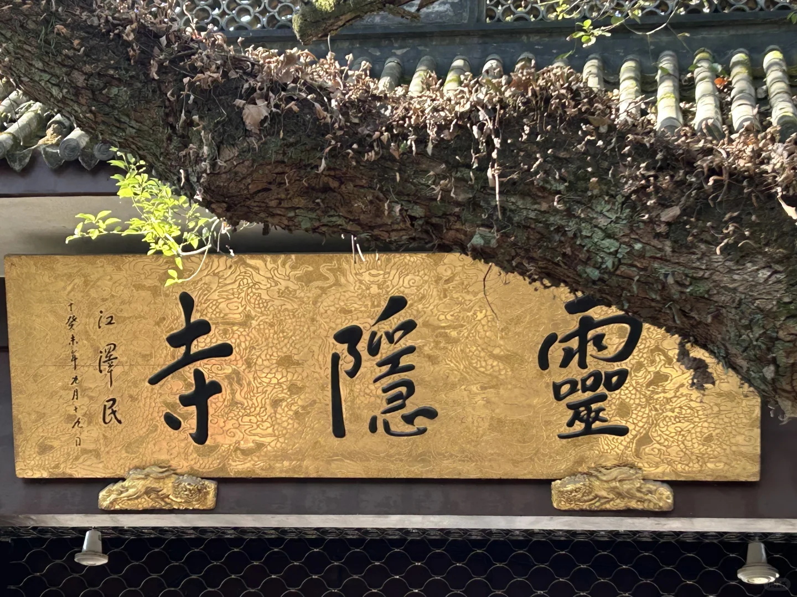
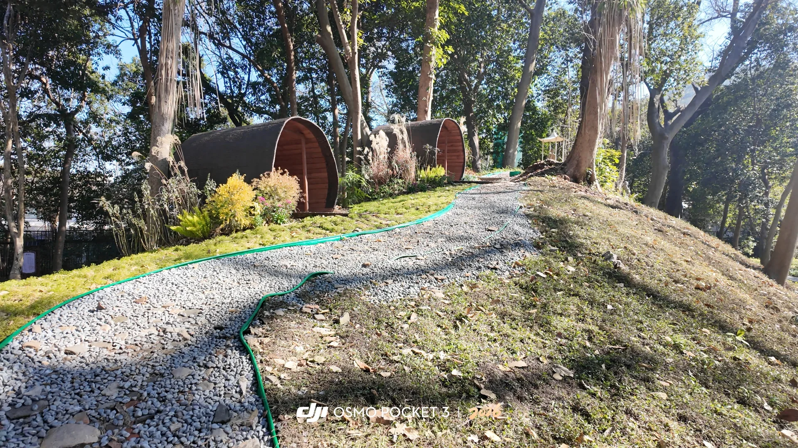
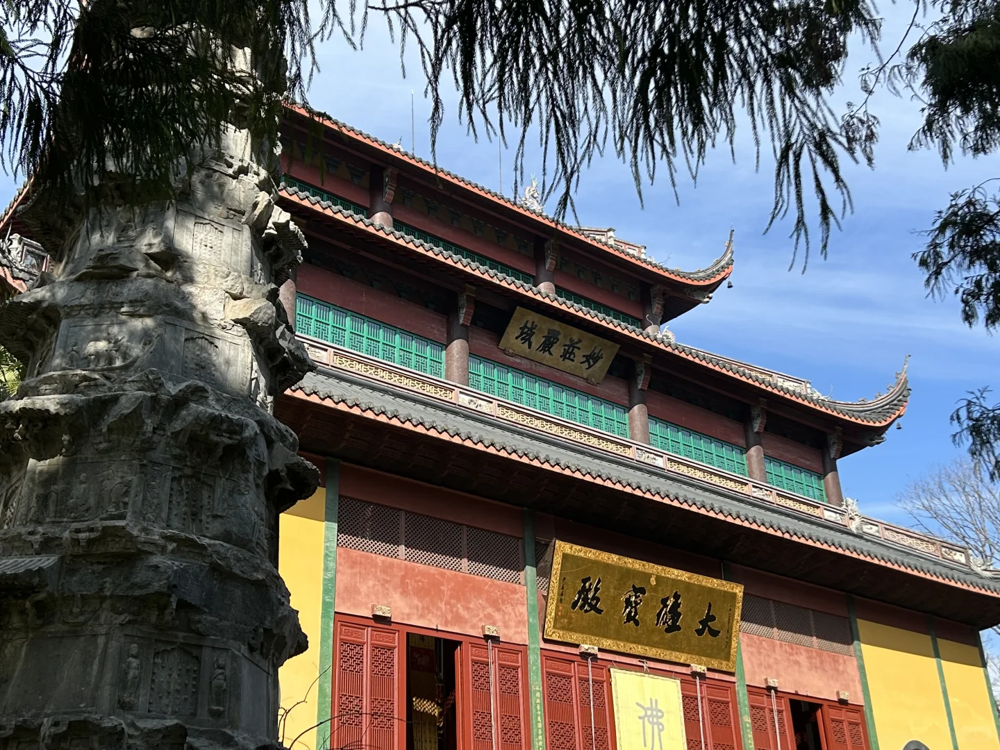

1 / 10
前幾日和高中玩的最好的四個朋友在杭州聚了兩日。
起因是杭電的朋友還沒放假，海大的朋友正好飛蕭山，我和🐟休假中已經躺了數日，朋友說作為東道主請我們吃飯，索性在杭州耍兩天。
四人學校真是天南地北，成都西安海南杭州，平日打遊戲都會掉線網卡。上了大學一年就三個月可以見面，過年和暑假。
第一天晚上在西湖斷橋散步，忽然就聊起之後的發展了，畢竟也都大三，到了抉擇時刻。我一向是不愛和這幾個朋友說一些人生戀愛工作之類的嚴肅話題，畢竟平日聯繫的大多都是遊戲動畫校園生活。我自己活得很焦慮內耗，不想把負面情緒散到他們身上。
那晚有一些比較隱私的事情，大家也都當苦水相護傾訴了一番。自力更生家庭條件相似的四個單身漢擠著斷橋旁的一張長椅，眼前是p6西湖的夜景，又開始暢想我們從高三畢業就一直計畫的日本旅行，時不時心有靈犀開些只有我們懂的玩笑。
西湖的夜景真他媽的美——觸景傷情，湧上心頭的先是感慨，感慨走到現在真是不容易；再是幸福，能有三個知心好友一起坐在西湖邊談天說地；後是害怕，害怕這麼美好的時光之後很難再有了。我想我可能這輩子都忘不了這張長椅和斷橋的夜景了。
西湖回來的路上，路口有婆婆推著蒸籠小車賣桂花糕，十五塊錢四個，蒸籠小車和米糕的味道，都跟十年前小學門口放學了奶奶給買的一模一樣。如今小學記憶漸漸淡去，奶奶也已經離開我兩年了。
第二天去拜了靈隱寺，或是生活的諸多不順，我開始對這些事情產生敬畏和期待。杭電的朋友瘋狂求姻緣，把我們都逗樂了。我還嘲笑他應該祈禱生髮而不是姻緣哈哈哈。因為最近沒什麼很具體的願望，我就一直求好運求健康幸福，還在迦藍求了財，不過這週股票還是虧了十幾個點哈哈哈。
願我們四人都能順風順水，幸福安康。